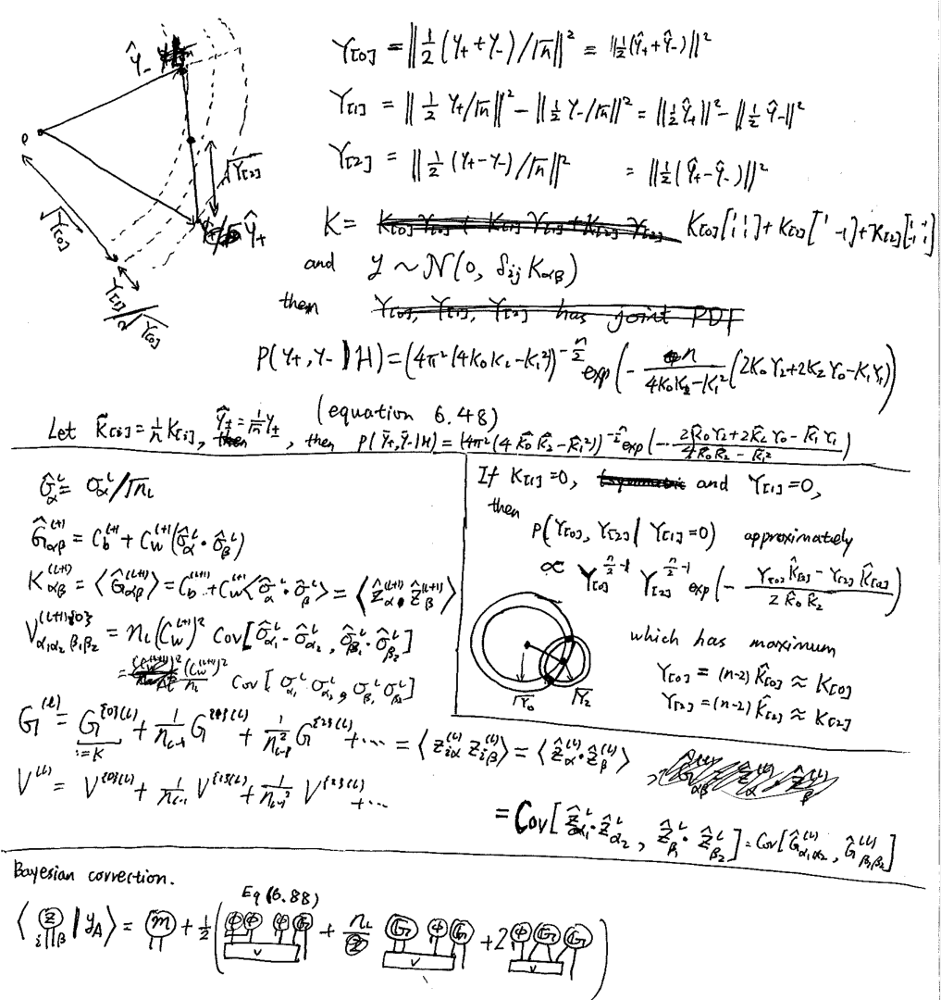

Suggestions and errata for The Principles of Deep Learning Theory
My friend: What annoying precision.
Me: I call it conceptual clarity.
My hand-written reference sheets while I was working through the book.
Recommendations
Miscellaneous generic recommendations
Add a list of the most important equations at the ends of chapters.
Because SGD is so essential to modern machine learning, I feel like it’d help to compile all the comments in the book about SGD in one section. I compiled them here:
essentially everything we will say about gradient descent will apply to stochastic gradient descent as well.
It doesn’t matter which loss function we used, e.g., MSE or cross-entropy,
how many steps we took to get to the minimum, or whether we used gradient descent or SGD. Said another way, algorithm independence means that these hyperparameters and training set uniquely specify the statistics of fully-trained networks in the infinite-width limit; Newton’s method is just a nice theoretical trick to leap right to the solution.
Newton’s method is a theoretical tool that lets us describe a fully-trained extremely-wide network, even if the network was trained very practically by a many-step version of (stochastic) gradient descent.
For SGD to actually converge to a minimum, you need to decrease the learning rate over the course of training, otherwise the network will fluctuate around, but never actually reach, the minimum. Intuitively, this is because at each step the optimization problem does not include the entire training set.
- Somewhere in the book (maybe in Chapter 4?) give the following intuition for the infinite-width limit:
- At the infinite width limit, the neural network degenerates into a sequence of continuous functions \(G^{(1)}, \dots, G^{(L)}\), such that the preactivations in the neural network, upon input \(x\), becomes independent random samples from gaussian distributions: \(z^{(l)}_{i} \sim N(0, G^{(l)}(x))\).
- You can then calculate how \(G^{(l+1)}(x)\) is derived from \(G^{(l)}\) by a simple argument with gaussians.
- I think it would be good to introduce kernel linear regression in a simple setting. Perhaps at “Probability, Correlation and Statistics, and All That” since it is such a simple and general technique in statistics. Then later, in the chapter on Bayesian learning, one can immediately point out that in the “6.3.2 Let’s Not Wire Together”, we are seeing just a standard kernel regression. And later, in Chapter 10, one can immediately point out that this is kernel regression where the kernel matrix is \(\Theta\).
Feynman diagrams
Teach some naive methods with Feynman diagrams. For some examples, see my attached sheets, which contains many Feynman diagrams (not exactly, but you get the idea). Specifically, it simplifies certain calculations to be almost tolerable.
Quartic interaction intuition
For the quartic interaction, a few pictures could really make it clear. I drew some schematically:
The pictures make it clear that one effect of quartic interaction is to create correlations between the squared preactivations of neurons. Sometimes it is a negative correlation (as in the \(c=-2\) picture) and sometimes it is a positive correlation (as in the \(c = 6\) picture), and sometimes it is more subtle. The \(c=2\) picture has circular contours like gaussian distribution, but it does not mean that \(z_{i, \alpha}^2, z_{j, \beta}^2\) are independent. The dependence is more subtle.
More generally, the effect is to correlate \(z_{i, \alpha_1}z_{i, \alpha_2}\) and \(z_{j, \alpha_3}z_{j, \alpha_4}\), but this is too difficult to plot. Still, these contour plots give a good mental picture.
import numpy as np
import matplotlib.pyplot as plt
def z_func(x, y, c):
return x**2 + y**2 - 0.2 * (x**4 + y**4 + c * x**2 * y**2)
x = np.linspace(-1, 1, 200)
y = np.linspace(-1, 1, 200)
X, Y = np.meshgrid(x, y)
fig, axes = plt.subplots(1, 3, figsize=(15, 5))
for i, c in enumerate([-2, 2, 6]):
Z = z_func(X, Y, c)
ax = axes[i]
ax.set_aspect(1)
contour = ax.contour(X, Y, Z, levels=10)
ax.set_title(f"c = {c}")
ax.set_xticks([])
ax.set_yticks([])
fig.suptitle(rf"Contour plots of $z_{{i,\alpha}}^2 + z_{{j,\beta}}^2 - 0.2(z_{{i,\alpha}}^4+z_{{j,\beta}}^4+cz_{{i,\alpha}}^2 z_{{j,\beta}}^2)$")
plt.tight_layout()
plt.show()Normalized vectors
Many formulas can be made more intuitive by using the following convention on normalizing vectors:
Define the normalized activation vectors \(\bar \sigma_{\alpha}^{(\ell)} := \sigma^{(\ell)}_{\alpha} / \sqrt{n_\ell}\).
We can motivate this by arguing that a good neural network should have all activations in a layer roughly \(O(1)\) random, and close to independent (so that they don’t collapse to a low-dimensional subspace). Then, \(\bar \sigma_{\alpha}^{(\ell)}\) would have norm \(O(1)\).
For example, equation (4.76) then becomes
\[\frac{1}{n_{\ell}} V_{\left(\alpha_1 \alpha_2\right)\left(\alpha_3 \alpha_4\right)}^{(\ell+1)} = (C_W^{(\ell+1)})^2 \mathrm{Cov}[\bar \sigma_{\alpha_1}^{(\ell)} \cdot \bar \sigma_{\alpha_2}^{(\ell)}, \bar \sigma_{\alpha_3}^{(\ell)} \cdot \bar \sigma_{\alpha_4}^{(\ell)}]\]
Shape of the kernels
I think the equation (6.48) is very important and should be put in Chapter 1.2. It should not be relegated to a footnote. In particular, it gives the best picture for what the kernel is actually doing. I have attached a picture showing what I meant.
I think this equation + picture can be put very early on, at the start of “Chapter 1.2 Probability, Correlation and Statistics, and All That”, since if we are going to get an “effective theory” we should say up front what are the key effective variables. It took me some time to figure out that the effect of the kernel \(K\) is to characterize the effective shape of an activation triangle!
I think you can teach this effectively as follows: Given that we have two high-dimensional vectors \(y_+, y_-\) in \(\mathbb{R}^n\) where \(n\) is a large number, distributed as \(y \sim N(0, \delta_{ij} K_{\alpha \beta})\), that is
\[p(y_+, y_-) \propto \exp\left[-\frac 12 \sum_{i, j, \alpha, \beta} y_{+, i, \alpha}y_{-, j, \beta} K^{\alpha \beta} \delta^{ij}\right]\]
We don’t want to know the exact orientation, just the shape of the triangle formed by \(0, y_-, y_+\). Then, we can characterize the shape of the triangle with three numbers \(Y_{[0]}, Y_{[1]}, Y_{[2]}\) defined by … and we divide by \(\sqrt n\) because we want to normalize the size of the triangle to be \(O(1)\) even as \(n\) grows towards infinity (This should remind you of the central limit theorem). Similarly, we divide \(K\) by \(n\) to obtain \(\hat K\). Now, it is routine to calculate
\[ p(\hat y_+, \hat y_-) = (4\pi^2 (4 \hat K_{[2]}\hat K_{[0]} - \hat K_{[1]}^2))^{-n/2} \exp \left[ - \frac{2\hat K_{[0]} Y_{[2]} + 2\hat K_{[2]} Y_{[0]} - \hat K_{[1]} Y_{[1]}}{4 \hat K_{[2]}\hat K_{[0]} - \hat K_{[1]}^2}\right] \]
Then, a geometric argument shows that conditional on \(Y_{[1]} = 0\), the maximal likelihood estimate of \(Y_{[0]}\) is \(n \hat K_{[0]} = K_{[0]}\).
Faster solution of recursion relations
There is a faster way to solve the recursion relations like Eq (9.85). I will solve it as an example:
First, rewrite it as a differential equation:
\[ y' \approx -2p_\perp y/x + C x^{2-2p_\perp} \]
where we have substituted \(y\) for \(A\), and \(x\) for \(\ell\).
Then, plug it into Wolfram Alpha, we find the solution is \[ y = \frac{1}{3} C x^{1-p_\perp} + c_1 x^{-p_\perp-2} \]
where \(c_1\) is an arbitrary constant.
In general, the recursion formula has not one, but two possible leading terms. In all cases that appeared in the book, the second leading term is not actually leading, so all the equations turned out exactly correct. Still, it should be pointed out.
For example, the recursive equation (9.79) has, as its lowest terms, two terms:
\[ F^{(\ell)}=\frac{1}{\left(5-p_{\perp}\right)}\left[\frac{1}{\left(-a_1\right)}\right]\left[\widetilde{\lambda}_b+\frac{\widetilde{\lambda}_W \sigma_1^2}{\left(-a_1\right)}\right]\left(\frac{1}{\ell}\right)^{p_{\perp}-1} + \frac{c}{\ell^4} + \cdots \]
Of course, if we assume \(p_\perp \leq 5\), then indeed we can ignore the \(c/\ell^4\) term. This needs to be proven, as follows:
The \(K^* = 0\) universality class requires \(a_1 < 0\). Given that, we have
\[p_\perp = 1 + \frac{\frac 14 (\sigma_2/\sigma_1)^2}{a_1} \leq 1\]
with equality reached when \(\sigma_2 = 0\).
Similarly, the recursive equation (9.80) also has two lowest terms:
\[ B^{(\ell)}=\frac{1}{3}\left[\widetilde{\lambda}_b+\frac{\widetilde{\lambda}_W \sigma_1^2}{\left(-a_1\right)}\right]^2\left(\frac{1}{\ell}\right)^{2 p_{\perp}-3} + \frac{c}{\ell^{2p_\perp}} + \cdots \]
although in this case, the second term is dominated by the first regardless of what \(p_\perp\) is.
Similarly, Eq (10.77) on page 272 has an extra term of order \(O(1/\ell^{p_\perp})\), which is negligible only because \(p_\perp \leq 1\).
Symmetry groups
On page 83, the symmetry group of the indices of \(V\) is the symmetry group of the square. Specifically, you can imagine labelling a square’s vertices with \(\alpha_1, \alpha_3, \alpha_2, \alpha_4\), counterclockwise. Then any rotation and reflection of the square is a permutation of its four vertices that does not change \(V\).
Since the symmetry group of the square has 8 elements, this explains the factor of \(\frac 18\) in (4.44). I think this improves footnote 7.
Similarly, on page 209, 210. I think the symmetries can be geometrically pictured as follows:
- For each of \(A, B, D, F, V\), write the indices clockwise on the vertices of a quadrilateral, as 1324.
- \(A_{(12)(34)}, V_{(12)(34)}\) both have symmetry of the square.
- \(B_{(12)(34)}\) has symmetry of the square in \(l=1\), and subsequently, rectangle.
- \(D_{(12)(34)}\) has symmetry of the square in \(l=1\), and subsequently, rhombus.
- \(F_{(12)(34)}\) has symmetry of the square in \(l=1\), of the rhombus in \(l=2\), and subsequently, no symmetry.
Dimensional analysis
Make a table for dimensional analysis. I made one:
| Variable | Value |
|---|---|
| \(z, x, \sigma\) | 1 |
| \(\sigma'\) | 0 |
| \(W, C_W\) | 0 |
| \(b\) | 1 |
| \(C_b\) | 2 |
| \(S\) | 0 |
| \(\lambda_{\mu\nu}\) | Same as \(\theta_\mu \theta_\nu\) |
| \(\lambda_b\) | 2 |
| \(\lambda_W\) | 0 |
| \(\Theta, H\) | 2 |
| \(G, K\) | 2 |
| \(g\) | 2 |
| \(\chi_\parallel, \chi_\perp\) | 0 |
| \(h\) | -2 |
| \(V, D, F, B, A, P, Q\) | 4 |
“Acausally rising to meet the criticism”
I don’t know if it is intended, but you used as epigraph for Chapter 5 from Perceptrons (1988), and have Rumelhart et al “acausally rising to meet the criticism”. In fact, they were responding to Chapter 0 of Perceptrons (1969):
The sciences of computation and cybernetics began, and it seems quite rightly so, with a certain flourish of romanticism. They were laden with attractive and exciting new ideas which have already borne rich fruit. Heavy demands of rigor and caution could have held this development to a much slower pace; only the future could tell which directions were to be the best. We feel, in fact, that the solemn experts who most complained about the “exaggerated claims” of the cybernetic enthusiasts were, in the balance, much more in the wrong. But now the time has come for maturity, and this requires us to match our speculative enterprise with equally imaginative standards of criticism.
The second edition of Perceptrons was published in 1988, during the second coming of neural networks. In their Parallel Distributed Processing research project, Rumelhart et al very specifically showed that 2-layered networks were able to solve problems such as XOR and symmetry recognition that were criticized in Perceptrons (1969). The second edition, as the authors stated, was a literal reprinting of the first edition with just an added preface and an added epilogue criticizing neural networks.
Chapter 4
- page 86:
- For Eq (4.46) and (4.57), add a footnote to the alert reader who is getting confused by the serial expansion. I think something like
- “To the alert reader: If you are confused by the fact that the second term seems to have order \(O(vn^2) = O(n)\), good job paying attention! Consider proceeding directly to reading the”Marginalization over Neurons” section. But the short answer is that we can set \(1 \ll n_2 \ll n_1 = n\) for now, calculate, then proceed to layer 3. When calculating layer 3, we will note that the \(O(n_2)\) terms exactly cancel out, so that we can then take the \(n_2 \to n\) limit and get the same outcome.”
- For Eq (4.46) and (4.57), add a footnote to the alert reader who is getting confused by the serial expansion. I think something like
- Page 88. For the derivation of Eq (4.61), explain a bit more:
- Start with Eq (4.46). Enumerate the possible \(j_1, j_2\). The only cases where the covariance inside the bracket is nonzero are when \(j_1=i_1 \neq j_2\) ( \(n\) terms), \(j_2=i_1 \neq j_1\) ( \(n\) terms) and \(i_1=j_1=j_2\) (1 term). Now, simplify using the index symmetry of \(v\).
- Page 103. After “In going through this calculation in your personal notes or on the margins of this book, you can explicitly see the cancellation…”, add the sentence: “The order \(n_\ell\) terms in Eq (4.111) and (4.113) exactly cancel each other out.”
Chapter 5
I think some pictures would really help explain what the kernels mean. I have drawn some by hand.
The midpoint kernel.

The kernel perturbation into \(K_{[̄0]}, \delta K_{[̄1]}, \delta\delta K_{[̄2]}\).
How two activation vectors (signal propagation) propagate through a critically tuned neural network at initialization.
- Page 112. Add “Of course, \(g\) is not a function of \(K\) only, but rather depends on \(\sigma\) as well. We suppress this dependence.”
- Page 115. For “To do so, we will find it convenient to project the full kernel matrix…”, I suggest instead of that, write this: “Because \(K\) has 4 entries, it can be regarded as a vector in \(\mathbb{R}^4\). Because it is symmetric, it is in a 3-dimensional subspace. Thus, we can decompose it with three orthogonal vectors:”
- page 118
- Point out that \(\hat e^u\) is just the vector pointing in the angle \(45^\circ - \delta \theta\) where \(\delta \theta = \frac{\delta K_{[1]}^{(\ell)}}{2 K_{00}^{(\ell)}}\), and \(\hat e^w\) is \(\hat e^u\) rotated by 90 degrees, since symmetric matrices always have perpendicular eigenvectors.
- Point out that \(\delta \theta\) can be found just using \(K_{00}, \delta K_{[1]}\), saving some effort.
- Page 119.
- The logical relation between \(u\) and \(z_0\) is unclear. In particular, it seems we have a double definition for \(z_0\).
- First definition: \(z_0\) is the preactivation corresponding to the midpoint input. That is, \(z_0 = z^{(\ell)}_i(x_0)\).
- Second definition: \(\frac{u^2}{2 \lambda_u}=\frac{z_0^2}{2 K_{00}^{(\ell)}}\).
- If both definitions are equally true, then we must prove that they give the same \(z_0\). This is not proven, and I think it is actually false.
- I think \(z_0\) is purely defined by the second definition, for the simple reason that everything in this page is just doing a gaussian integral in \(\mathbb{R}^2\). Definition 1 requires \(x_0\) to exist, but this page does not require \(x_0\) to exist. Therefore, the second definition is how \(z_0\) is defined.
- The first “definition” is not a definition, but an interpretation. I think that it should be interpreted as this: Suppose that \(x_\pm = x_0 \pm \delta x\), then \[z_0 = z_i^{(\ell)}(x_0) + O(\delta^2)\]
- page 121. Eq (5.53) should have another entry, which will be useful later: \[ \braket{(z^2 - K)\sigma \sigma }_K / (2K^2) = \braket{z\sigma' \sigma}_K / K = \underbrace{\braket{\sigma'' \sigma + \sigma' \sigma'}_K}_{\text{new}} \]
Both equations in this can be proved by Stein’s lemma, which in this case says
\[\braket{F(z) z}_K = K\braket{F'(z)}_K\]
- page 125. Add a table. Perhaps something like
| fixed point | decay rate | activation function |
|---|---|---|
| a line (exactly marginal deformation) | no decay (semi-criticality) | leaky ReLU |
| zero | power-law | tanh, sin |
| nonzero | power-law | swish, gelu |
| none | none | sigmoid, softplus, monomial |
- page 127. In “5.3.1 General Strategy”, The new Eq (5.53) allows us to get a much simpler condition than Eq (5.73). Solve for \(\chi_\perp(K) = \chi_\|(K)\) would give us
\[ \braket{\sigma'' \sigma}_K = 0 \]
This then allows us to get the results by direct calculation, without checking it numerically. For example: - For many activation functions, \(\braket{\sigma'' \sigma}_K = 0\) has only soluion \(K = 0\), at which point we have \(C_W = 1 / \sigma'(0)^2, C_b = -(\sigma(0) / \sigma'(0))^2\). This requires \(\sigma'(0) \neq 0, \sigma(0) = 0\). - softplus activation - \(\sigma(z) = \ln(1+e^z)\). - Because both \(\sigma, \sigma'' > 0\), there is no critical \(K\). - monomial activation - \(\sigma(z) = |z|^p\), with \(p > 1\). By scale invariance, \(\braket{\sigma'' \sigma}_K = K^{p-1}\braket{\sigma'' \sigma}_1\), so \(K = 0\) is the solution. But this violates the condition \(\sigma'(0) = 0\), so there is no criticality. - sigmoid activation - \(\sigma(z) = 1/(1 + e^{-z})\). Its second derivative is odd, so \(\braket{\sigma''}_K = 0\). This means \(\braket{\sigma'' \sigma}_K = \braket{(\sigma - 1/2)'' (\sigma-1/2)}_K\), at which point we reduce to the case of \(\tanh\). - Just like the case of \(\tanh\), we have \(K = 0\), but in this case we don’t have \(\sigma(0) = 0\). - tanh activation - Because \(\tanh''(z) \tanh(z) < 0\) except at \(z = 0\), the only critical solution is \(K = 0\). - sin activation - In the integral \[
\braket{\sin''(z) \sin(z)}_K = -\frac{1}{\sqrt{2\pi K}} \int e^{-\frac{z^2}{2K}}\sin^2(z) \; dz
\] the integrand is positive except at isolated points \(0, \pm \pi, \dots\), so the only critical solution is \(K = 0\).
- For example, the SWISH function gives
import numpy as np
import matplotlib.pyplot as plt
from scipy import integrate
from scipy.optimize import root_scalar
def plot_sigma_expectation(sigma, sigma_second_derivative, K_range):
def integrand(z, K):
return sigma(z) * sigma_second_derivative(z) * np.exp(-z**2 / (2*K)) / np.sqrt(2 * np.pi * K)
def expectation(K):
result, _ = integrate.quad(integrand, -np.inf, np.inf, args=(K,))
return result
expectations = [expectation(K) for K in K_range]
z_range = np.linspace(-5, 5, 400) # Adjust range/points as needed
sigma_vals = [sigma(z) for z in z_range]
sigma_dd_vals = [sigma_second_derivative(z) for z in z_range]
product_vals = [sigma(z) * sigma_second_derivative(z) for z in z_range]
fig, (ax1, ax2) = plt.subplots(2, 1, figsize=(10, 12)) # 2 rows, 1 column
ax1.plot(K_range, expectations)
ax1.set_xlabel('K')
ax1.set_ylabel('E[σ(z)σ\'\'(z)]')
ax1.set_title('E[σ(z)σ\'\'(z)] as a function of K')
ax1.set_xscale('log')
ax1.grid(True)
ax2.plot(z_range, sigma_vals, label='σ(z)')
ax2.plot(z_range, sigma_dd_vals, label='σ\'\'(z)')
ax2.plot(z_range, product_vals, label='σ(z)σ\'\'(z)')
ax2.set_xlabel('z')
ax2.legend()
ax2.grid(True)
plt.tight_layout()
plt.show()
def sigmoid(z):
return 1 / (1 + np.exp(-z))
def sigmoid_d(z):
s = sigmoid(z)
return s * (1 - s)
def sigmoid_dd(z):
s = sigmoid(z)
return s * (1 - s) * (1 - 2 * s)
def swish(z):
return z * sigmoid(z)
def swish_d(z):
return sigmoid(z) + z * sigmoid_d(z)
def swish_dd(z):
return 2 * sigmoid_d(z) + z * sigmoid_dd(z)
K_range = np.exp(np.linspace(-5, 10, 1000))
plot_sigma_expectation(swish, swish_dd, K_range)
def solve_for_K(sigma, sigma_second_derivative, K_guess):
def integrand(z, K):
return sigma(z) * sigma_second_derivative(z) * np.exp(-z**2 / (2 * K)) / np.sqrt(2 * np.pi * K)
def expectation(K):
result, _ = integrate.quad(integrand, -np.inf, np.inf, args=(K,))
return result
sol = root_scalar(expectation, x0=K_guess, method='brentq', bracket=[0.01*K_guess,100*K_guess])
if sol.converged:
return sol.root
else:
return None
solve_for_K(swish, swish_dd, 15)- page 133 “Lastly, let us note for all aspiring “activation designers” out there that we can…”
- I have designed a concrete example. The general strategy is to just design a sum of linear transforms of \(\tanh\). \[ \sigma(z) = \tanh(z) - \frac 18 \tanh(2z) \]
with \(\sigma_1 = 3/4, \sigma_5 = -48, a_1 = 0, a_2 = -16\), \(K \sim \frac{1}{\sqrt{8l}}\).
I wonder if anyone has tried this so far? Does it work better for very deep networks?
- page 136: “one can check that \((-a_1) < 0\)” I think it’d be best to actually write the exact value, for completeness. The exact value is \(-a_1 = -3/4 < 0\).
- page 139: It’d be nice to sketch the derivations for Eq (5.108)–(5.110). I sketch it out as follows:
- The recursion for \(K\) is Eq (4.90).
- The recursion for \(V\) is found by plugging the formula for \(g\) Eq (4.108) into Eq (4.90), and noticing that \(\chi_\|(K^l)\) appears in it. Since we only need to calculate \(V^{(l+1)}\) to order \(O(1)\), we need only the \(g^l = K^l + O(1/n)\) part.
- The recursion for \(G^{\{1\}}\) is by simplifying Eq (4.115).
- page 147: The painful integral does not have to be painful. Here’s how I did it:
I drew on paper the contour plot of \(ReLU(z_+) ReLU(z_-)\), and noted that it looks like hyperbolas in the first quadrant. Then I drew contour plot of the normal distribution \(N(0, K^{(l)})\) and noted that it is an ellipse. Now, by a squeeze in the diagonal direction, then a scaling, we can change the normal distribution into a standard normal distribution. This changes the hyperbolas into different hyperbolas. Looking at the hyperbolas, I thought “This reminds me of the hyperbolic/Lorentz transformation in special relativity.” and that’s how I figured out the trick.
First, reparameterize
\[K^{(l)} = K_d^{(l)} \begin{bmatrix} 1 & \cos \psi^{(l)} \\ \cos\psi^{(l)} & 1\end{bmatrix} = K_d^{(l)}\sin \psi^{(l)} \begin{bmatrix} \cosh \phi^{(l)} & \sinh \phi^{(l)} \\ \sinh \phi^{(l)} & \cosh \phi^{(l)}\end{bmatrix} \]
This is useful because taking the square root of a hyperbolic transform matrix is easy: just divide the hyperbolic angle by 2.
Therefore, a random variable \(z \sim N(0, K^{(l)})\) is equivalent to
\[z = \sqrt{K_d^{(l)}\sin \psi^{(l)}} \begin{bmatrix} \cosh \frac{\phi^{(l)}}{2} & \sinh \frac{\phi^{(l)}}{2} \\ \sinh \frac{\phi^{(l)}}{2} & \cosh \frac{\phi^{(l)}}{2} \end{bmatrix} \begin{bmatrix}x\\y\end{bmatrix}\]
where \(x, y\) are standard normal.
The region of integration is \(z_+ > 0, z_- > 0\), which is the region bounded by two rays of slope \(-\theta_0, \frac \pi 2 + \theta_0\) where
\[\tan\theta_0 = \tanh \frac{\phi^{(l)}}{2} \implies \theta_0 = \frac\pi 4 - \frac{\psi^{(l)}}{2}\]
Now the integral becomes
\[ \frac{1}{2\pi} \int e^{-\frac{x^2+y^2}{2}} \left( x \cosh\frac{\phi^{(l)}}{2} + y \sinh\frac{\phi^{(l)}}{2}\right)\left(x \sinh\frac{\phi^{(l)}}{2} + y \cosh\frac{\phi^{(l)}}{2}\right) K_d^{(l)} \sin\psi^{(l)} dxdy \]
In polar coordinates, this splits to a product of two simple integrals.
Chapter 6
- page 173: It’d be good to start the section “6.3.2 Let’s Not Wire Together” by saying “In this section we derive the conditional distribution of the network’s output on the test set, conditional on the training set. We will do this by marginalizing a multivariate gaussian to derive \(z_B^{(L)}|y_A \sim N(m^\infty_{i,\beta}, \mathbb K_{\beta_1 \beta_2} \delta_{i_1i_2})\), where \(m^\infty, \mathbb K \delta\) are the mean vector and the variance tensor. So if you know how to marginalize a gaussian, try to derive Eq (6.57) and Eq (6.64) yourself. (This should remind you of kernel regression and gaussian processes.) Then continue reading from Eq (6.66).”.
- I know you are trying to make this textbook truly introductory and I appreciate that. However, I think most machine learning and physicists researchers know how to marginalize a gaussian, since it is essential for gaussian processes and statistical mechanics (and this section is basically statistical mechanics + neural network gaussian process).
- It took me a bit too long to figure out that this is what the section is saying (what with all those gigantic symbols and formulas), so I think stating up front what the section is about would be great.
- page 177: I think it’d be good to point out that kernel methods also require a matrix inversion and thus is also impractical for large datasets. To be more precise, this section is about the neural network gaussian process, which is equivalent to Bayesian kernel ridge regression.
- page 179: We can make it sharper: “At the infinite width limit, every single neuron (both hidden and output) is completely independent from every other neuron, and we have \[
p(z_D^{(1)}, \dots, z_D^{(L)}) =\prod_{l=1}^L \prod_{i_l} p(z_{i, D}^{(l)})
\] which makes it clear that this is as”no representation” as it gets.”
- page 181. Eq (6.78) can be made even clearer like this:
\[\mathbb{E}\left[\left(z_2^{(\ell)}\right)^2 \Big| \check z_1\right] - \mathbb{E}\left[\left(z_2^{(\ell)}\right)^2\right] = \left[\left(\check{z}_1^{(\ell)}\right)^2-\mathbb{E}\left[\left(z_1^{(\ell)}\right)^2\right]\right]\left[\frac{V^{(\ell)}}{2n_{\ell-1}\left(G^{(\ell)}\right)^2}\right] + O(1/n^2)\]
Chapter 7
- Page 196. learning-rate tensor should be explicitly called symmetric. That is, \(\lambda_{\mu \nu} = \lambda_{\nu\mu }\).
- Page 198. “not necessarily positive” -> “not necessarily positive-definite”.
- Page 198.
- “for models that overfit their training set – the test loss may even increase.” is tautological, because it is just the definition of “overfit”. I suggest this instead: “the test loss may even increase. This is what it means for the model to”overfit” its training set.”
- Classically, there are two meanings of “overfitting”. Back then, overfitting both means “interpolating the training set” and “performing worse on the test set”. Both meanings were thought to be the same. This allows us to say that a model has overfitted the training set without ever testing it, by using the first definition.
- In the age of deep learning, the two meanings are no longer the same, and so the meaning of “overfitting” is no longer clear. It should be assigned to one of them, not the other. I think it should be assigned to the second meaning, since the “over” in “overfit” implies it’s something undesirable.
- Perhaps the entire comment can be put in a footnote.
Chapter 8
- page 205. Because SGD is so essential to modern machine learning, I feel like it’d be best to say in a footnote: “To dispel any unwarranted hope, we note that this book is only going to use backpropagation exactly once: in deriving Equation (9.90).”
- page 244. I think the statement of “equivalence principle” is important enough that it should be properly defined, in a single sentence, on a separate line. Something like this:
Equivalence principle: Every block of parameters at every layer should contribute equally to learning.
- page 244. I find the phrase “As we retroactively saw in §9.2” deeply confusing. If it is “retroactive” as in “In hindsight, …” then we did NOT see it back then, so we cannot say we “saw” it. Indeed, this proves it is mathematically impossible to “retroactively saw” anything. I suggest saying it like this instead:
Using this new perspective, please look back to §9.2, especially equation (9.43). At criticality, if we are to satisfy the equivalence principle, we must have \[ \cdots \sim \lambda_b^{(\ell-1)} \sim \lambda_W^{(\ell-1)} A_2 K^{\star} \sim \lambda_b^{(\ell)} \sim \lambda_W^{(\ell)} A_2 K^{\star} \] that is,
\[\cdots \sim \lambda_b^{(\ell-1)} \sim \lambda_W^{(\ell-1)} \sim \lambda_b^{(\ell)} \sim \lambda_W^{(\ell)}\]Now, suppose we train multiple MLP of the same width on the same dataset, but with different depths, we would have \(\Theta^{(L)} =(\lambda_b + \lambda_W A_2 K^*) L\). Then, if we set \[ \lambda_b = \tilde \lambda_b / L, \quad \lambda_W = \tilde \lambda_W / L \] then \(\Theta^{(L)} = (\tilde\lambda_b + \tilde\lambda_W A_2 K^*)\) regardless of depth \(L\). This is beneficial in practice as it allows us to tune learning rates \(\tilde\lambda_b, \tilde\lambda_W\) on a shallow and narrow network quickly, then pick the best setting, and use those to train a deep and wide network, while being reasonably certain that the learning rates would transfer correctly.
Intuitively, this means that with the first gradient update step, the change in each of \(b^{(l)}, W^{(l)}\) contributed to changing the loss by an approximately equal portion of \(\Delta \mathcal L_A/(2L)\).
- page 245: Same comment applies for “we retroactively saw in §9.3”. I suggest this instead:
- Using this new perspective, please look back to §9.3, especially equation (9.69). At criticality, if we are to satisfy the equivalence principle, the contribution of each layer’s weights and biases to the final NTK must be of order \(1/L\) : \[ \lambda_b^{(l)} (l/L)^{p_\perp} \sim \lambda_b^{(l)} \frac 1l (l/L)^{p_\perp} \sim \frac 1L \]
which can be satisfied by
\[
\lambda_b^{(\ell)}=\widetilde{\lambda}_b\left(\frac{1}{\ell}\right)^{p_{\perp}} L^{p_{\perp}-1},
\quad \lambda_W^{(\ell)}=\widetilde{\lambda}_W \left(\frac{L}{\ell}\right)^{p_{\perp}-1}
\]
Chapter 10
For Section 10.3.2, I think this picture would help:
- page 279: I think (10.110) can be explained better as follows:
- We have to fit a function \((\epsilon_1, \epsilon_2) \mapsto \Theta_{\epsilon_1, \epsilon_2}\). Write it as \(f(x, y)\). By Taylor expansion, \[f(x,y) = f(0,0) + \partial_x f(0,0) x + \partial_x f(0,0) x + \frac 12 (\partial_{xx} f(0,0) xx + \partial_{yy} f(0,0) yy +2 \partial_{xy} f(0,0) xy) + O(x^3,y^3)\]
- If we know that \(f(x,y) = f(y,x)\), then we have \(\partial_{x}f(0,0) =\partial_{y} f(0,0)\) and \(\partial_{xx}f(0,0) =\partial_{yy} f(0,0)\), so there are only 4 free coefficients. In particular, if we have a degree-2 polynomial \(p(x,y)\) that is equal to \(f\) for \((x,y) = (\pm 1, \pm 1)\), then we have \[f(x,y) = p(x,y) + O(x^3, y^3)\]
Chapter 11
- page 312-313: (11.67) and (11.70) are trivial to evaluate if we use Dirac delta function: \(\sigma'' = (a_+ - a_-)\delta\).
Chapter ∞
For ∞.2 Training at Finite Width, I find calling \(F\) the “damping force” very puzzling. If we take the limit of continuous time, we will have something like
\[ \dot z(t) = -H z(t) + F(t) \]
In this case, \(F\) is not damping. Indeed, without “damping”, the system would just exponentially decay to zero. If anything, \(H\) is the damping! I would rather call \(F\) the “driving” force.
For ∞.2 Training at Finite Width, it is useful to use matrix tensor product notation. In fact, a lot of it is really just high-school Olympiad methods in linear recurrence relation, but the heavy notation makes it hard to recognize.
For example, \(X_{II}\) can be written simply as \[ X_{II} = \eta \left(I^{\otimes 2} - (I - \eta \tilde H)^{\otimes 2}\right)^{-1} \] This allows us to simply evaluate:
\[\begin{aligned} b(t) &= \eta \left(\sum_{s=0}^{t-1} ((I - \eta \tilde H)^s)^{\otimes 2}\right) \epsilon^F(0)^{\otimes 2} \\ &= \eta \left(I^{\otimes 2} - (I - \eta \tilde H)^{\otimes 2}\right)^{-1}\left(I^{\otimes 2} - ((I - \eta \tilde H)^t)^{\otimes 2}\right) \epsilon^F(0)^{\otimes 2}\\ &= X_{II} ((z-y)^{\otimes 2} - \epsilon^F(t)^{\otimes 2}) \end{aligned}\] and similarly for \(c(t), X_{II}\).
Equation (∞.122) directly results in (∞.123), without any derivation: \[z^I(t) = \eta \sum_s F(s) - \hat H \eta \sum_s z^I(s) \implies \eta \sum_s z^I(s) = \hat H^{-1}\left(\eta \sum_s F(s) - z^I(t)\right)\]
Errors
- page 213. (8.49) should be \(\sigma_{j;\alpha_1}\sigma_{j;\alpha_2}\).
- page 219, (8.71) has a mismatched bracket
- page 252, Eq (10.12) should have \(i, i\) not \(i_1, i_2\)
- page 280, (10.113) (10.114)
- Consider the special case where \(y = z^{(L)}\) at the beginning. If this is the case, then the network would learn nothing, so we should have \(z^{(L)}(T) = z^{(L)}\). This then requires the signs to be in the way I wrote it.
- page 281, (10.115), (10.116) needs to remove the factor of 4 as well.
- page 303, Eq (11.37) should have \(\delta_3\)
- page 307, Eq (11.48) should use \(G\) instead of \(K\). At least, it would be less confusing since the rest of the chapter uses \(G\), even though \(K\) and \(G\) are defined to be equal.
- page 309, Eq (11.51)
- page 339
- page 364.
- page 365